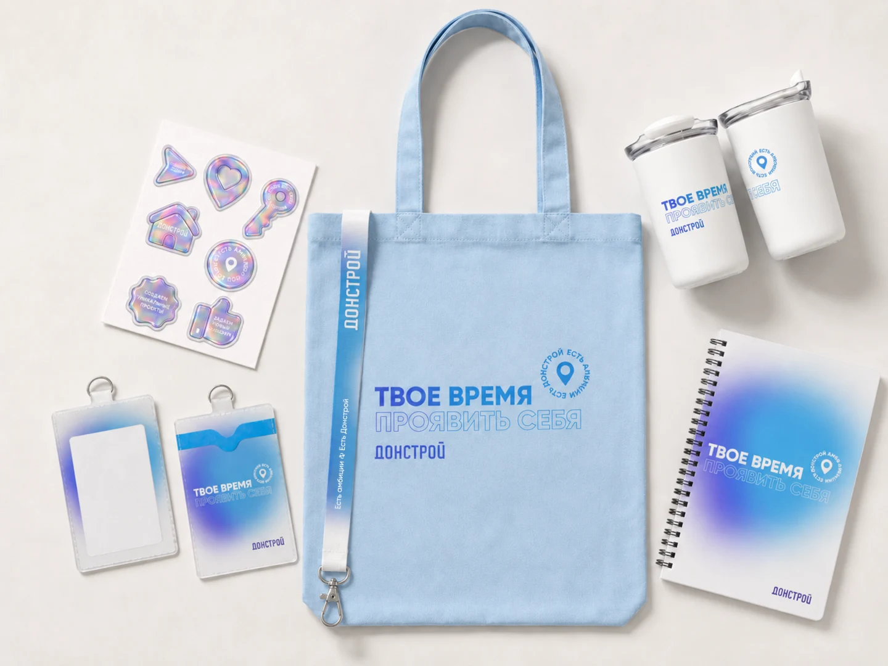
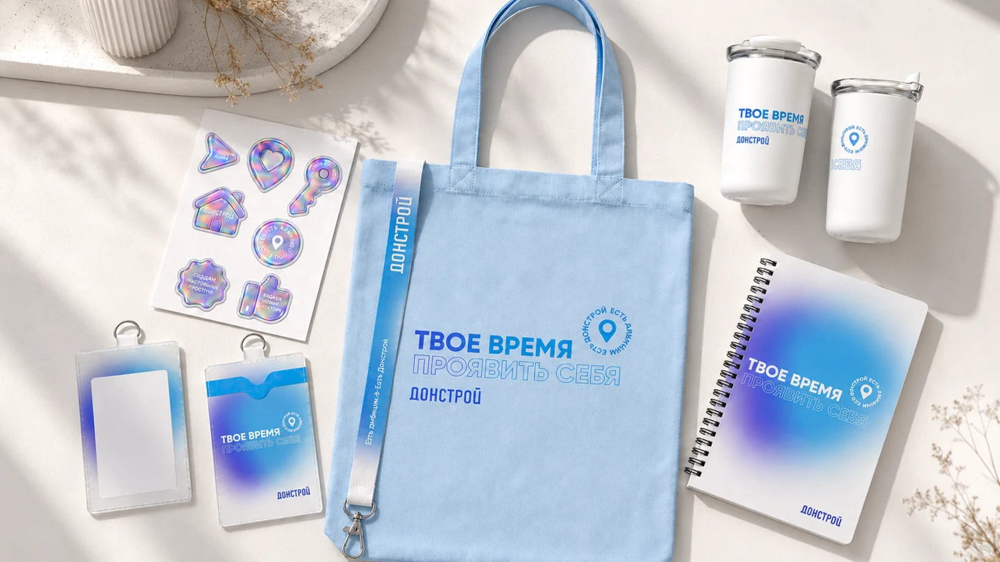

Задача
Объединить базовые товары, предложенные клиенту для велком-пака, в один визуально цельный набор.
Приветственный набор. От дизайн-концепции до реализации.

Объединить базовые товары, предложенные клиенту для велком-пака, в один визуально цельный набор.
Разработал концепцию оформления, адаптировал её для предметов набора и довёл проект до реализации.
Готовый велком-пак «Донстроя». Голубая палитра, сине-фиолетовый градиент и фраза «Твоё время проявить себя» объединяют шопер, блокнот, термостаканы и аксессуары.
Посмотреть проект на Behance